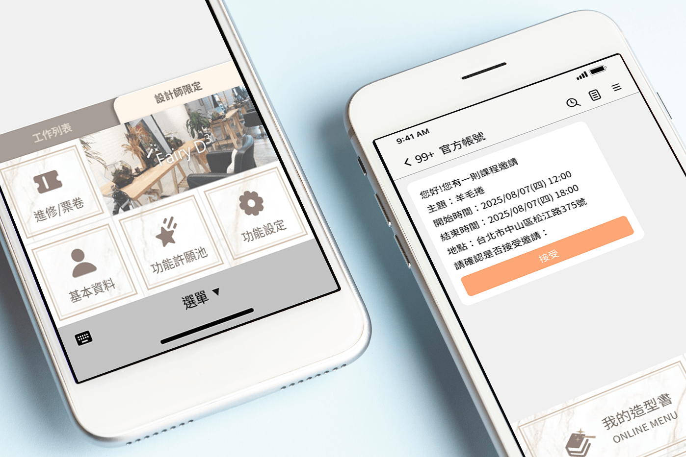
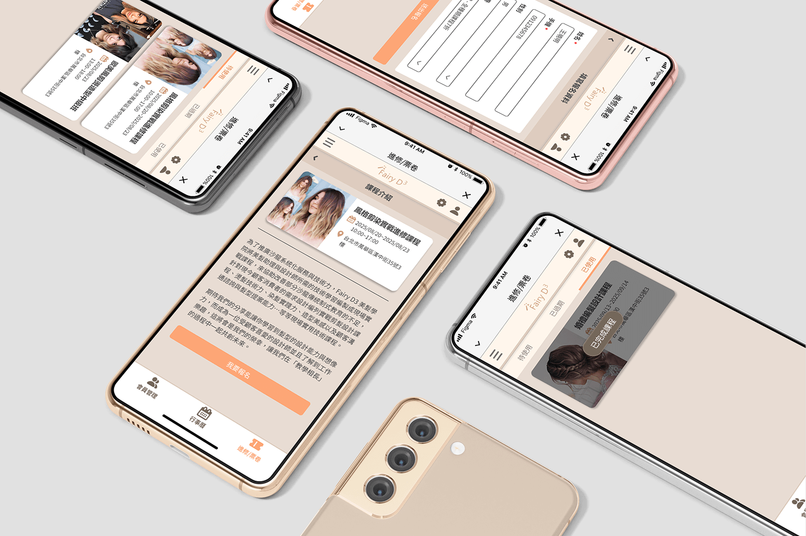
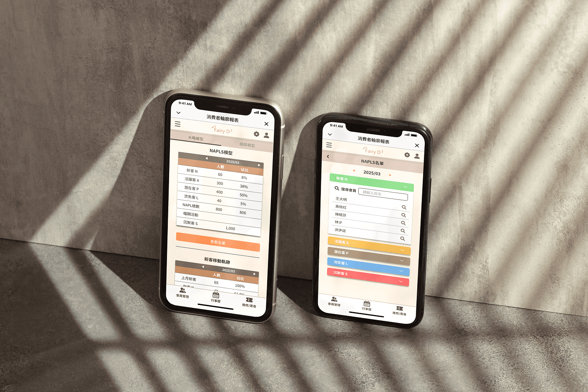

沙龍髮品
專為美髮師打造，輕鬆管理自己的接案與業務
#UI設計
專案背景
Background
這是一個沙龍美髮業專用的 LINE@ 管理系統設計案，目標使用者為髮型設計師。本系統協助設計師管理個人客戶、營業數據與行銷活動，以提升顧客經營效率與服務品質。
本案由公司內部主導開發，我主要負責整體UI設計，根據PM提供的需求文件，獨立進行模組規劃與畫面設計。專案在設計階段完成主要模組畫面，尚未進入開發流程，後因公司內部團隊調整而停止。
本案由公司內部主導開發，我主要負責整體UI設計，根據PM提供的需求文件，獨立進行模組規劃與畫面設計。專案在設計階段完成主要模組畫面，尚未進入開發流程，後因公司內部團隊調整而停止。
我的角色與任務
擔任UI設計師，負責所有畫面設計與介面一致性統籌，根據PM提供的需求文件與使用場景，獨立推敲操作流程並設計模組畫面。
系統功能架構
System Structure
本系統依據髮型師的日常經營需求，共規劃 6 個主要模組，包含：行事曆、會員管理、營業數據、消費者輪廓、熟客經營與進修/票卷等功能。
以下節選其中兩個具代表性的模組進行說明：
以下節選其中兩個具代表性的模組進行說明：
行事曆
作為髮型設計師每日營運的核心工具，行事曆不僅顯示工作排程，更整合了「顧客預約」、「進修課程」、「會議」、「接案」與「私人行程」五種不同類型的行程管理，並根據行程類型觸發對應流程與提示，協助使用者高效完成日常任務。
設計考量
1
將行程類型明確分類，降低操作複雜度。
2
根據行程不同，自動發出 LINE 推播或提示訊息，提升溝通效率。
安全提醒機制
針對「私人接案」類型的行程，系統設計了安全通知流程，保障設計師在外工作的安全性：
1
當預約時間到達時，系統會跳出彈窗詢問「是否已抵達現場」並紀錄抵達時間。
2
在預設結束時間時，系統再次詢問「是否已離開現場」，並同步紀錄時間。
3
若系統偵測到時間已過但未收到離開回報，將自動通知設計師設定的緊急聯絡人。

營業數據分析
協助髮型師快速掌握個人營運狀況，包含每日/月營收趨勢、顧客基本輪廓分析、消費項目偏好與活動/廣告成效等。資料分層與視覺化圖表設計為主要挑戰，必須在小螢幕中呈現大量資訊並保持可讀性。
設計考量
1
將複雜數據依層級分類為「時間維度」與「分析對象」兩種主軸。
2
使用長條圖、圓餅圖與數據表交互對應，幫助使用者視覺理解營收變化。
3
在多層資料頁中設計回跳與切換機制，避免使用者迷失在報表中。


